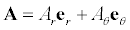
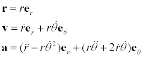

The Free Fall in Polar Coordinates model computes the trajectory of a freely falling particle using Newton's second law expressed in polar coordinates. The model shows a ball, its trajectory, and arrows representing the instantaneous radial and tangential components of the ball's velocity. The ball bounces elastically off of an immovable beam extending to the right of the origin.
Newton's second law F=ma is a vector equation and is independent of the type of the coordinate system used to express the problem. In polar coordinates, any vector A can be expressed as a sum of vector components (Ar, Aq) in the radial and tangential directions using unit vectors er and eq, respectively.

Note that vectors are often written in bold face font to distinguish them from scalars.
The position of a particle r can be expressed as the product of a distance r and a unit radial vector er but the velocity and acceleration are more complicated because r and er vary as the particle moves. The following relations are easily derived and can be found in most mechanics and mathematical methods books.

These kinematic expressions describe the motion of a particle without consideration of the forces that bring about the motion. In order to study the meaning of these equations, we solve Newton's second law for a particle subject to a constant force in the next section.
Position, velocity, and acceleration in polar coordinates are discussed in the following texts:
This simulation was created by Wolfgang Christian using the Easy Java Simulations (Ejs) modeling tool. You can modify this simulation if you have Ejs installed by right-clicking within a plot and selecting "Open Ejs Model" from the pop-up menu. Information about Ejs is available at: <http://www.um.es/fem/Ejs/>.